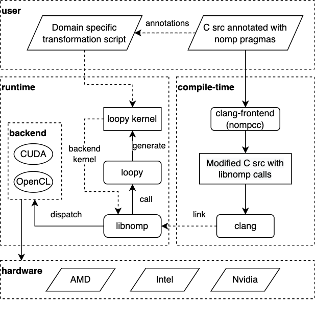

Introduction
nomp: Nomp isn’t OpenMP
nomp is a pragma based programming model for C. It looks superficially similar to OpenMP but acts more like OpenCL and/or CUDA thus delivering the best of both worlds. nomp has its own compiler (nompcc) and runtime (libnomp).
nompcc is a clang based compiler that can parse nomp pragmas and convert them to libnomp library calls. This transformed source code is then compiled using a user’s favorite compiler (like gcc or nompcc itself) and linked against libnomp. libnomp runtime can be thought of as an abstraction on top of other compute runtimes like OpenCL, CUDA, HIP, etc. libnomp exposes APIs for managing host/device buffers as well as kernel launches in a platform independent manner.
nomp workflow is shown in the following figure.
Real power of nomp comes from its use of loopy as a code generator and runtime code transformer. loopy is a code generator for array based code on both CPUs and GPUs. In contrast, to most popular programming models like OpenMP/OpenCL/CUDA, etc., which force the user to make implementation choices at program logic level, loopy separate program logic from implementation details. For example, all the afore mentioned programming models force the programmer to decide memory location for the arrays used at compile time (shared memory vs global memory vs register file) and how the loops are mapped to hardware axes (grid and block configuration in CUDA or NDRange in OpenCL). loopy provides an API for the user to experiment and tune these details at runtime and thus providing a more portable way of writing compute kernels. libnomp expose these functionalities to user through easy to program pragmas.